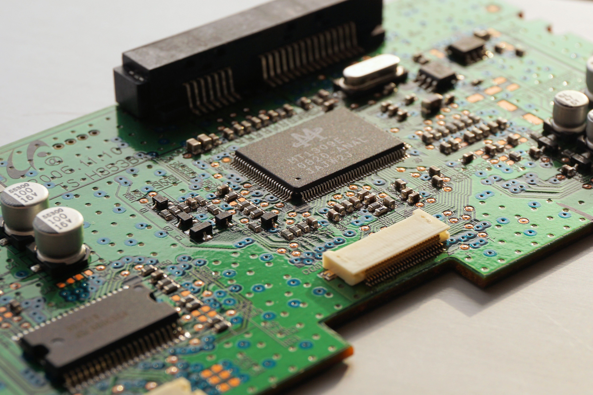
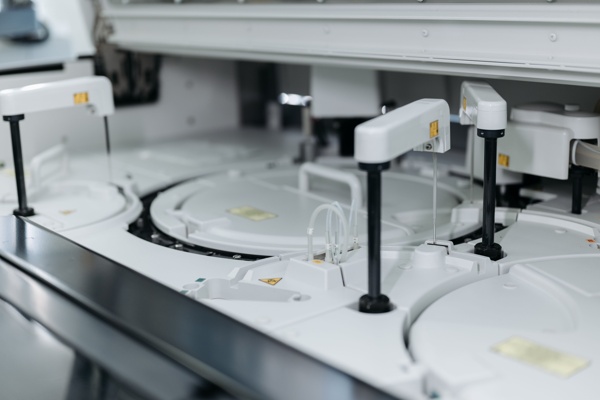
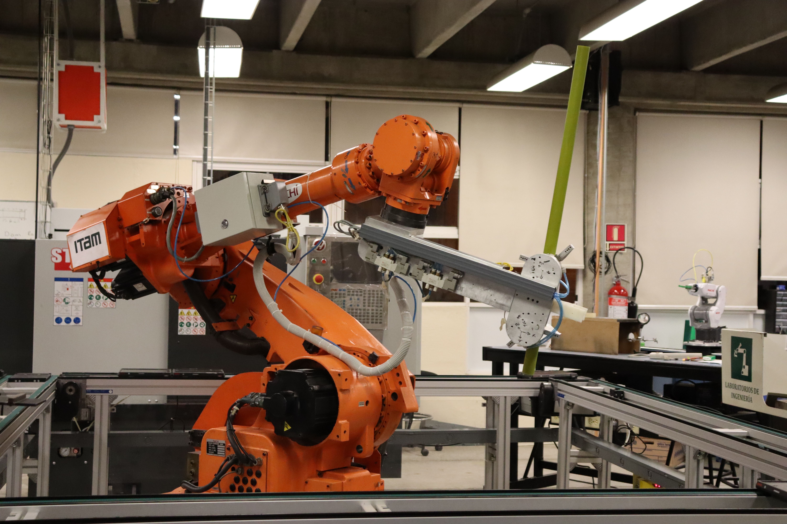

建昶的微小精密車削能力，特別適合以下需要高精度、特殊材質、微小尺寸零件的高附加價值產業。
光通訊產業對零件尺寸與一致性的要求極為嚴格，建昶長年專注微小精密車削，具備穩定量產高精度光通訊金屬件的豐富實績。
晶圓搬運、對位、固定相關設備，需要大量精密定位銷（PIN）、間距套（Spacer）、固定件，要求尺寸一致性極高。
建昶的 SKH9、SUS440C 等高硬度材料加工能力，及精密 PIN 量產實績，直接符合這個產業需求。

醫療器材零件需要生物相容材質（SUS316L、Titanium）、超高精度、表面清潔度，且通常為客製化小批量或高混少量訂單，正是建昶最擅長的服務型態。

Inconel718、A286、Titanium 等高溫合金，是一般車床廠不願接的難加工材料。建昶具備這類材料的量產實績，適合航太供應鏈中的精密小零件需求。
機器人關節軸、精密傳動軸、連接件，需要高精度圓度與直線度，且長徑比通常較大，正是走心式車床的強項。
